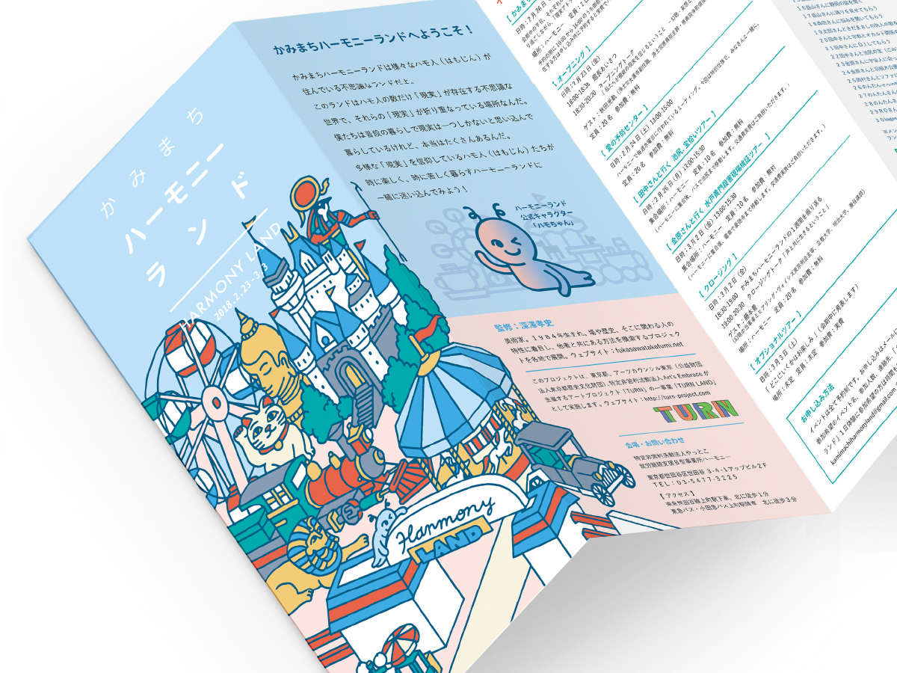
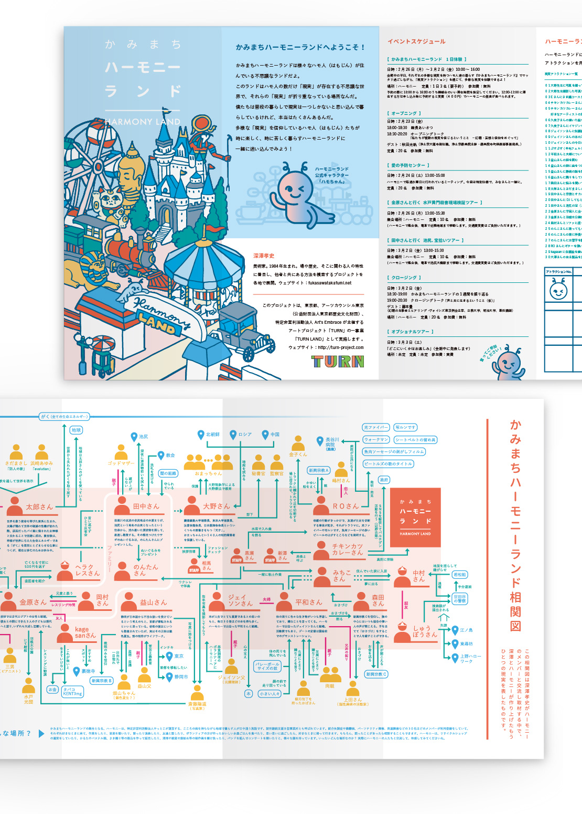

かみまちハーモニーランド
NPO法人やっとこ / NPO法人Art’s Embrace
リーフレット / イラスト
2018. 02


リーフレット / イラスト
2018. 02
アーティストが福祉施設や社会的支援を必要とする人のコミュニティへ赴き、出会いと共働活動を重ねるアートプロジェクト「TURN 」 と、美術家の深澤隆史による、統合失調症や躁鬱病などを持つメンバーの就労支援施設「ハーモニー」を舞台にしたイベント「かみまちハーモニーランド」のリーフレットデザイン。
統合失調症の症状である幻覚・妄想は、本人にとっては紛れもない現実として存在しています。ハーモニーでは日頃から、お互いの幻覚についてのトークセッションを行い、みんなが症状について明るく捉える姿勢で活動をされています。そんな様子を外部の方にも知ってもらうため、少し皮肉を込めてハーモニーをレジャーランドに、そこにいるメンバーをキャラクターに模し、スタンプラリーを行うイベントが「かみまちハーモニーランド」です。裏面には大きく、現実なのか妄想なのか、ごちゃ混ぜにした相関図を配置しました。
＜ BACK
© Moeri Ito